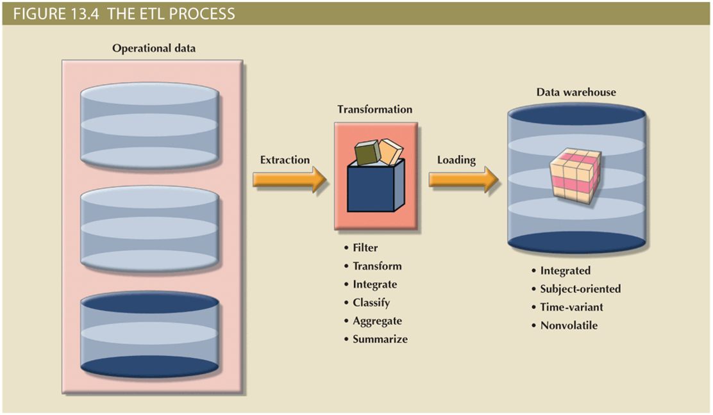
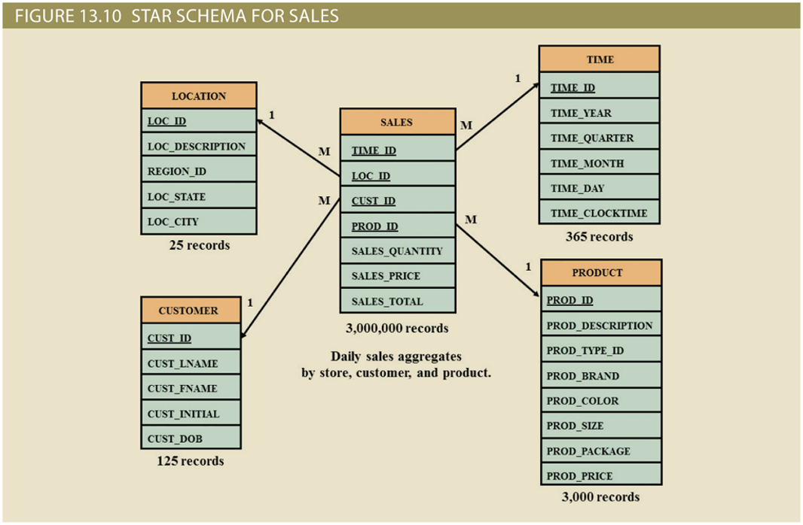

Business Intelligence and Data Warehouses
Business Intelligence and Data Warehouses¶
Objectives¶
- Describe the role of business intelligence in providing comprehensive business decision support
- Describe the architecture, reporting styles, evolution, and benefits of business intelligence
- Differentiate between operational data and decision support data
- Identify the purpose, characteristics, and components of a data warehouse
- Develop star and snowflake schemas for decision-making purposes
- Describe the characteristics and capabilities of online analytical processing (OLAP)
- Describe the role and functions of data analytics and data mining
- Explain how SQL analytic functions are used to support data analytics
- Define data visualization and explain how it supports business intelligence
Need for Data Analysis¶
- Organizations tend to grow and prosper as they gain a better understanding of their environment
- Evaluate through tracking daily transactions and analyzing company data
- Organizations are always looking for a competitive advantage
- Product development, market positioning, sales promotions, and customer service
- Companies and software vendors addressed these multilevel decision support needs by creating autonomous applications for particular groups of users
- This more comprehensive and integrated decision support framework within organizations became known as business intelligence
Business Intelligence¶
- Comprehensive, cohesive, integrated set of tools and processes
- Captures, collects, integrates, stores, and analyzes data
- Generates and presents information to support business decision making
- Allows transformation
- Data into information
- Information into knowledge
- Knowledge into wisdom
- Concepts, practices, tools and techniques to help business
- Understand core capabilities
- Provide snapshots of the company situation
- Identify key opportunities to create a competitive advantage
- Provides a framework
- Collecting and storing operational data and aggregating it into decision support data
- Analyzing decision support data and presenting generated information to end users to support business decisions
- Making business decisions which generate more data
- Monitoring results to evaluate outcomes and predicting future outcomes with a high degree of accuracy
BI Architecture¶
{kind=link}
- ETL tools: Data extraction, transformation, and loading (ETL ) tools collect, filter, integrate, and aggregate internal and external data to be saved into a data store optimized for decision support.
- Data store: The data store is optimized for decision support and is generally represented by a data warehouse or a data mart. The data is stored in structures that are optimized for data analysis and query speed.
- Query and reporting: This component performs data selection and retrieval, and it is used by the data analyst to create queries that access the database and create the required reports.
- Data visualization: This component presents data to the end user in a variety of meaningful and innovative ways. This tool helps the end user select the most appropriate presentation format, such as summary reports, maps, pie or bar graphs, mixed graphs, and static or interactive dashboards.
- Data monitoring and alerting: This component allows real-time monitoring of business activities. The BI system will present concise information in a single integrated view. This integrated view could include specific metrics about the system performance or activities, such as number of orders placed in the last four hours, number of customer complaints by product by month, and total revenue by region. Alerts can be placed on a given metric; once the value of a metric goes below or above a certain baseline, the system will perform a given action, such as emailing shop floor managers, presenting visual alerts, or starting an application.
- Data analytics: This component performs data analysis and data-mining tasks using the data in the data store. This tool advises the user as to which data analysis tool to select and how to build a reliable business data model. Business models are generated by special algorithms that identify and enhance the understanding of business situations and problems.
Practices to Manage Data¶
- Master data management (MDM): collection of concepts, techniques, and processes for identification, definition, and management of data elements
- Governance: method of government for controlling business health and for consistent decision making
- Key performance indicators (KPI): numeric or scale-based measurements that assess company’s effectiveness in reaching its goals
- General
- Finance
- Human resources
- Education
- Modern BI reporting styles
- Advanced reporting
- Monitoring and alerting
- Advanced data analytics
BI Benefits¶
- Improved decision making is the main goal of BI, but BI provides other benefits
- Integrating architecture
- Common user interface for data reporting and analysis
- Common data repository fosters single version of company data
- Improved organizational performance
- Achieving all these benefits takes a lot of human, financial, technological resources, and time
- BI benefits are not achieved overnight; are the result of a focused company-wide effort that could take a long time (6 months to 3+ years)
BI Evolution¶
{kind=link}
- Decision support system (DSS) is an arrangement of computerized tools used to assist managerial decision making
- Typically has a much narrower focus and reach than a BI solution
- BI information technology has evolved from centralized reporting styles to the current, mobile BI and Big Data analytics style in the span of just a few years
- The rate of technological change is not slowing down; technology advancements are accelerating the adoption of BI to new levels
BI Technology Trends¶
- Several technological advances are driving the growth of business intelligence technologies
- Data storage improvements
- Business intelligence appliances
- Business intelligence as a service
- Big Data analytics
- Personal analytics
Decision Support Data VS Operational Data¶
Note
Although BI is used at the strategic and tactical managerial levels within organizations, its effectiveness depends on the quality of data gathered at the operational level * Operational data is seldom well suited to decision support tasks
- Operational data and decision support data serve different purposes
- Operational data is useful for capturing daily business transactions
- Decision support data gives tactical and strategic business meaning to the operational data
- Decision support data differs from operational data in three main areas
- Time span
- Granularity (level of aggregation)
- Dimensionality
{kind=link}
{kind=link}
DSS DB Requirements¶
- Database schema
- Must support complex, non-normalized data representations
- Data must be aggregated and summarized
- Queries must be able to extract multidimensional time slices
- Data extraction and filtering
- Allow batch and scheduled data extraction
- Support different data sources and check for inconsistent data or data validation rules
- Encourage advanced integration, aggregation, and classification
- Database size
- Very large databases (VLDBs)
- Advanced storage technologies
- Multiple-processor technologies
Data Warehouse¶
Note
Collection of data that provides support for decision making within a component framework that is: Integrated, subject-oriented, time-variant, and nonvolatile. 
{kind=link}
12 Data Warehouse Rules¶
- The data warehouse and operational environments are separated.
- The data warehouse data is integrated.
- The data warehouse contains historical data over a long time.
- The data warehouse data is snapshot data captured at a given point in time.
- The data warehouse data is subject oriented.
- The data warehouse data is mainly read-only with periodic batch updates from operational data. No online updates are allowed.
- The data warehouse development life cycle differs from classical systems development. Data warehouse development is data driven (DW); the classical approach is process driven (Classical).
- The data warehouse contains data with several levels of detail: current detail data, old detail data, lightly summarized data, and highly summarized data.
- The data warehouse environment is characterized by read-only transactions to very large data sets. The operational environment is characterized by numerous update transactions to a few data entities at a time.
- The data warehouse environment has a system that traces data sources, transformations, and storage.
- The data warehouse’s metadata is a critical component of this environment. The metadata identifies and defines all data elements. The metadata provides the source, transformation, integration, storage, usage, relationships, and history of each data element.
- The data warehouse contains a chargeback mechanism for resource usage that enforces optimal use of the data by end users.
Data Mart¶
- Small, single-subject data warehouse subset
- Provides decision support to a small group of people
- Benefits over data warehouses
- Lower cost and shorter implementation time
- Technologically advanced
- Inevitable “people issues”
Star Schemas¶
- Data modeling technique that:
- Maps multidimensional decision support data into a relational database
- Creates the near equivalent of multidimensional database schema from existing relational database
- Yields an easily implemented model for multidimensional data analysis
Basic Star Schema Components¶
- Facts: numeric values that represent a specific business aspect
- Dimensions: qualifying characteristics that provide additional perspectives to a given fact
- Attributes: used to search, filter, and classify facts
- Slice and dice: ability to focus on slices of the data cube for more detailed analysis
- Attribute hierarchies: provide a top-down data organization
- Aggregation and drill-down/roll-up data analysis
Star Schema Representation¶
- Facts and dimensions represented by physical tables in data warehouse database
- Many-to-one (M:1) relationship between fact table and each dimension table
Fact and Dimension Tables¶
- Related by foreign keys
- Subject to primary and foreign key constraints
- Primary key of a fact table
- Composite primary key because the fact table is related to many dimension tables
- Always formed by combining the foreign keys pointing to the related dimension tables 
{kind=link}
Performance Improving Techniques for the Star Schema¶
- Normalizing dimensional tables
- Snowflake schema: dimension tables can have their own dimension tables
- Maintaining multiple fact tables to represent different aggregation levels
- Save processor cycles at run time, thereby speeding up data analysis
- Denormalizing fact tables
- Improves data access performance and saves data storage space
- Partitioning and replicating tables
- Partitioning: splits tables into subsets of rows or columns and places them close to the client computer
- Replication: makes copy of table and places it in a different location
- Periodicity: provides information about the time span of the data stored in the table
Online Analytical Processing (OLAP)¶
- Online analytical processing (OLAP) is a BI style whose systems share three main characteristics
- Multidimensional data analysis techniques
- Advanced database support
- Easy-to-use end-user interfaces
{kind=link}
Multidimensional Data Analysis Techniques¶
- Data are processed and viewed as part of a multidimensional structure
- Particularly attractive to business decision makers who tend to view business data as being related to other business data
- Augmented advanced functions
- Data presentation
- Data aggregation, consolidation, and classification
- Computational
- Data-modeling
Advanced Database Support¶
- OLAP tools must have the following features to deliver efficient decision support:
- Access to many different kinds of DBMSs, flat files, and internal and external data sources
- Access to aggregated data warehouse data and operational database detail data
- Advanced data navigation features
- Rapid and consistent query response times
- Ability to map end-user requests
- Support for very large databases
Easy-to-Use End-User Interface¶
- When proper implementation leads to simple navigation and accelerated decision making or data analysis
- Advanced OLAP features are more useful when access is kept simple
- Many interface features are borrowed from previous generations of data analysis tools
Relational OLAP¶
- Relational online analytical processing (ROLAP)
- Provides OLAP functionality using relational databases and familiar relational tools to store and analyze multidimensional data
- Extensions added to traditional RDBMS technology
- Multidimensional data schema support within the RDBMS
- Data access language and query performance optimized for multidimensional data
- Support for very large databases (VLDBs)
Multidimensional OLAP¶
- Extends OLAP functionality to multidimensional database management systems (MDBMSs)
- MDBMS uses proprietary techniques store data in matrix like N-dimensional arrays
- End users visualize stored data as a 3D data cubes
- Grow to N number dimensions, thus becoming hypercubes
- Held in memory in a cube cache to speed access
- Sparsity: measures density of data held in the data cube
Comparison of ROLAP vs MOLAP¶
{kind=link}
Data Analytics¶
- Subset of business intelligence (BI) functionality that encompasses a wide range of mathematical, statistical, and modeling techniques with the purpose of extracting knowledge from data
- Explanatory analytics: focuses on discovering and explaining data characteristics and relationships based on existing data
- Predictive analytics: focuses on predicting future data outcomes with a high degree of accuracy
- Employs mathematical and statistical algorithms, neural networks, artificial intelligence, and other advanced modeling tools to create actionable predictive models based on available data
- Used in areas such as customer relationships, customer service, customer retention, fraud detection, targeted marketing, and optimized pricing
- Data mining focuses on the discovery and explanation stages of knowledge acquisition
- Analyzing massive amounts of data to uncover hidden trends, patterns, and relationships; to form computer models to simulate and explain the findings; and to use such models to support business decision making
{kind=link}
{kind=link}
SQL Analytic Functions¶
- The ROLLUP extension
- Used with GROUP BY clause to generate aggregates by different dimensions
- Enables subtotal for each column listed except for the last one, which gets a grand total
- The CUBE extension
- Used with GROUP BY clause to generate aggregates by the listed columns
- Enables you to get a subtotal for each column listed in the expression, in addition to a grand total for the last column listed
- Materialized views
- Dynamic table that contains SQL query command to generate rows and stores the actual rows
- Created the first time query is run and summary rows are stored in the table
- Automatically updated when base tables are updated
- Requires specified privileges
- Dynamic table that contains SQL query command to generate rows and stores the actual rows
Data Visualization¶
- Process of abstracting data to provide a visual data representation that enhances the user’s ability to comprehend the meaning of the data
- Goal is to allow the user to quickly and efficiently see the data’s big picture by identifying trends, patterns, and relationships
- The need for data visualization
- Ability to zoom in and out, drill down and up, filter, etc. is one of the many advantages of current breed of data visualization tools
- Makes it easier to understand data—in particular, large amounts of data
- The science of data visualization
- Roots in cognitive sciences: how the human brain receives, interprets, organizes, and processes information
- Pattern recognition
- Spatial awareness
- Aesthetics
- Roots in cognitive sciences: how the human brain receives, interprets, organizes, and processes information
- Understanding the data
- The same data can be presented in multiple ways
- In general, there are two types of data:
- Qualitative: describes qualities of the data
- Nominal or ordinal
- Quantitative: describes numeric facts or measures of the data
- Qualitative: describes qualities of the data